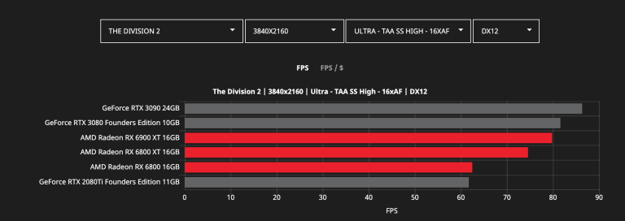
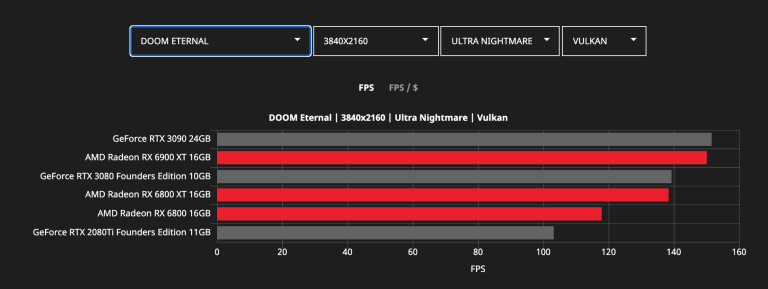
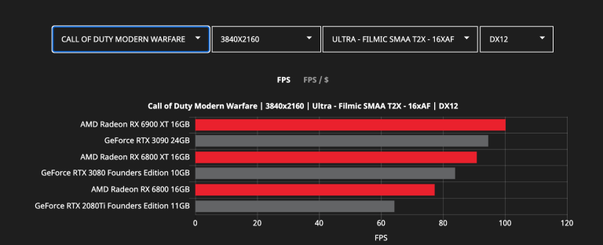
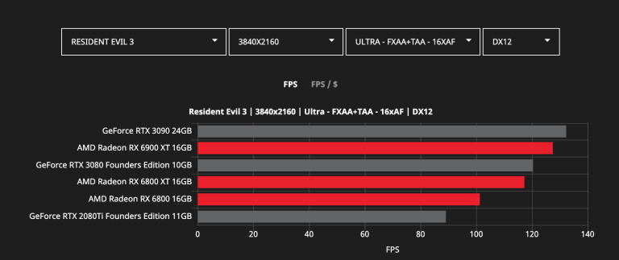
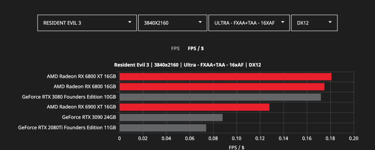
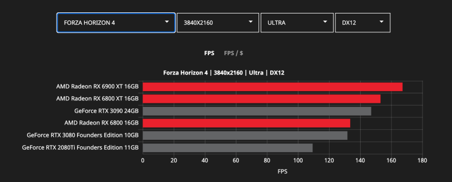
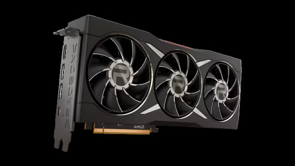

Performance to Rule Your Game
Introducing the AMD Radeon™ RX 6000 Series graphics cards, featuring the breakthrough AMD RDNA™ 2 architecture and engineered to take on next generation gaming with supercharged performance and breathtaking visuals.
     AMD Radeon™ RX In Your Next Upgrade
With leadership performance and memory configurations, AMD Radeon™ RX 6000 Series graphics have you covered no matter your budget. Watch tech-streamer and gamer Robeytech guide you through our powerful RX 6000 Series GPU lineup in his buyer’s guide.
Powerhouse Performance
The AMD Radeon™ RX 6000 Series graphics cards represent the forefront of engineering and design to deliver ultra-high frame rates. Powerful compute units with hardware raytracing acceleration, blistering-fast AMD Infinity Cache™, and large amounts of GDDR6 memory enable the ultimate gaming experience.
Engineered for Gamers
Powered by AMD RDNA™ 2 architecture, the Radeon™ RX 6000 Series graphics cards are engineered to offer new levels of power efficiency, performance, and features
Fully Rigged for Mind-blowing Visuals
The AMD Radeon™ RX 6000 Series graphics cards teleport you inside the action with the latest in visual technologies including DirectX® 12 Ultimate and AMD FidelityFX™2, enabling realistic lighting, shadows, and reflections along with new levels of detail.

AMD FidelityFX™ Technology
An open-source collection of optimized visual technologies bringing new levels of detail, reflections, and color, without heavy computational costs. Now supported in over 80 game titles.
DirectX® 12 Ultimate Ready
Experience realism and immersion with realistic lighting and shadows with DX12® Ultimate features such as DirectX® Raytracing and DirectStorage.
AMD Upscaling Technologies
AMD FidelityFX™ Super Resolution8 (FSR) is an in-game upscaling technology that unleashes new levels of performance across supported games. For games that do not support FSR, AMD Radeon™ Super Resolution9 (RSR) is available in AMD Software: Adrenalin Edition so gamers can still get amazing performance across thousands of titles.
Elevating Gaming Experiences
Get the best gaming experience with new features, new levels of responsive efficiency, and an advanced gaming ecosystem. The AMD Radeon™ RX 6000 Series graphics cards elevate your gaming experience.
AMD Software: Adrenalin Edition Performance Tuning Presets
One-click presets to tune your gaming experience.
AMD FreeSync™ Technology
Fluid. Stutter-Free. Tear-Free. Available In Over 2000 Displays.
AMD Smart Access Memory™
New levels of communication between Ryzen™ processors and Radeon™ graphics cards. Up to 15% more gaming performance with select games on Radeon™ RX 6000 Series graphics cards when paired with Ryzen™ processors.
Experience Radeon™ RX 6000 Graphics Cards with our Partners
AMD has collaborated with several partners such as iBuyPower, CyberPower, and MAINGEAR to bring AMD Ryzen™ 5000 Series processors and Radeon™ 6000 Series graphics cards to several pre-built desktops. With many pre-configured options becoming available over the next few months, it has never been easier to get into 4K PC gaming.

4K Gaming Performance Average Across 10 Games
RX 6950 XT
Up to 114 FPS
RX 6900 XT
Up to 109 FPS
RX 6800 XT
Up to 93 FPS
RX 6800
Up to 79 FPS